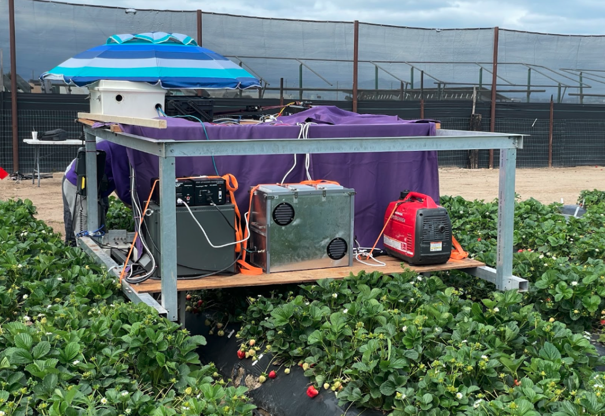
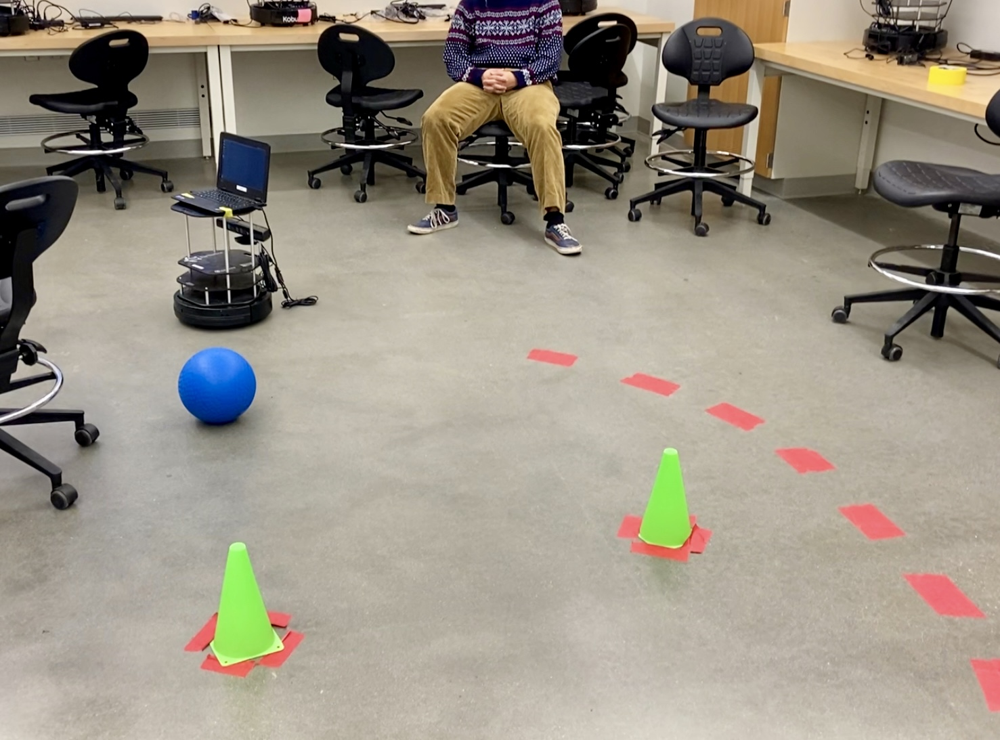
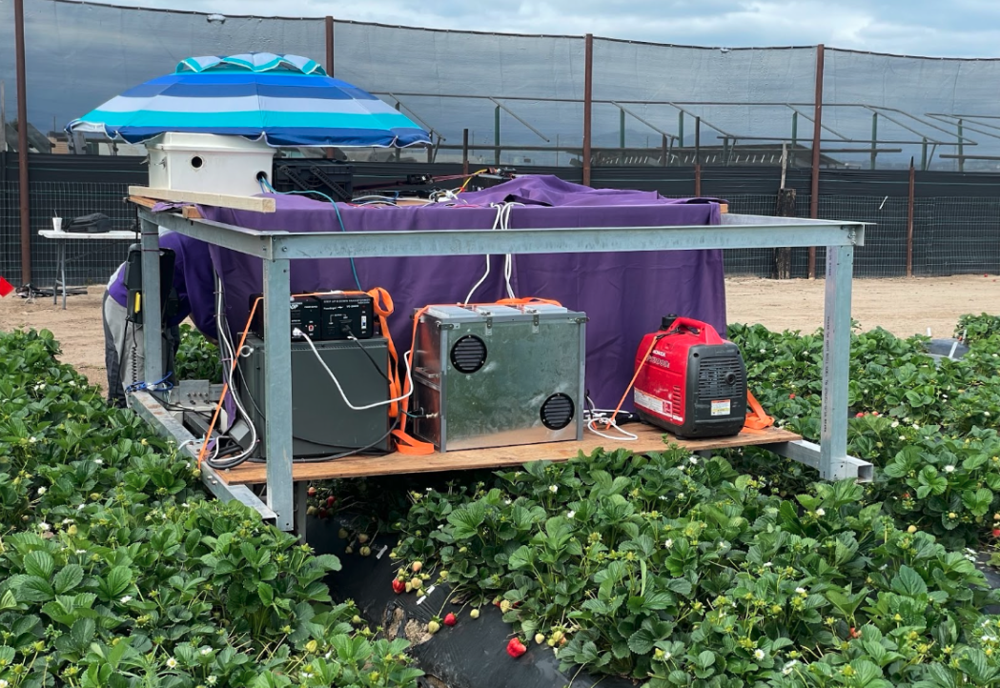
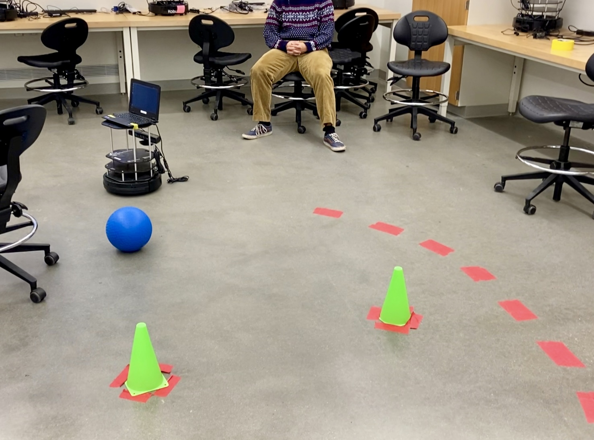

Eva Krueger
Robotics Graduate Student at Oregon State University

Robotics Graduate Student at Oregon State University
I am a robotics graduate student at Oregon State University, working in the Intelligent Machines and Materials Lab with Prof. Joseph Davidson. I graduated from Swarthmore College in 2024 with a B.S. in General Engineering and a B.A. in Environmental Studies.
During my studies, I am currently focusing on robotics systems design and automation in agriculture. My passion lies in creating efficient and sustainable systems for agricultural automation, and I am currently researching manipulation and grasping techniques for apple harvesting robots.
Jun 2023 – Present
Interned at Farmhand Ventures, an impact venture studio focused on designing human-centric solutions to improve global agricultural systems. My main project, "FarmGPT," involved collecting and analyzing data sets on specialty crop agricultural markets from sources like FAO STAT, USDA NASS, and recent US-Extension produced Crop Budgets. The goal was to make this information accessible to users through the FarmGPT chatbot and incorporate it into the Agtech Toolkit website.
Jun 2024 - Aug 2024
Created a new, faster, and higher-resolution imaging robot for a greenhouse lettuce farm. This robot captures images continuously as it moves, rather than stopping at every lettuce plot, making it ten times faster than the previous version. It uses two Basler high-resolution cameras, one for RGB imaging and one for spectral imaging. A Realsense depth sensor can also be mounted to capture depth data.
Feb 2021 - May 2024
Managed sustainable food gardens on campus, organized events for the Scott Arboretum, and designed outdoor structures like benches and workstations.
May 2022 - Dec 2022
Designed biodegradable nanocellulose-based moisture sensors for soil and food packaging applications. Investigated the use of different substrates for sensor performance.
May 2021 - Aug 2021
Worked on small-scale aquaponics systems, coding Arduino microcontrollers to take water quality measurements. Conducted experiments on the efficacy of flood-and-drain grow beds versus deep water culture beds for lettuce growth and created a training manual for future users.
 



Email: kruegeev@oregonstate.edu
LinkedIn: linkedin.com/in/eva-krueger-020367162
GitHub: github.com/eva415